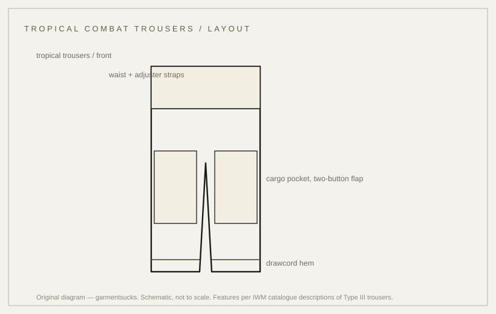

details · 1963
Jungle fatigue trousers: cargo pockets and a drawcord hem
The trousers half of the tropical uniform: cargo pockets, a drawcord hem, and a zip fly.
probable Published 2026-11-13 · last checked 2026-11-13

1. Summary
The tropical combat trousers are light cotton trousers with large expandable cargo pockets and drawstring adjusters at the cuffs.
The features below come from an institutional catalogue description of Type III examples; the first pattern is not described in the sources opened. Confidence: probable — a single institutional source, and it describes the later type.
2. What this is
Trousers, Combat, Tropical: the lower half of the Tropical Combat Uniform, cut in thin cotton poplin and closed with a zip fly and a button at the waist.
Cargo pocket: a large patch pocket with a pleated side that expands. Drawcord: a cord inside the hem channel. Poplin: a plain weave with a fine crosswise rib.
3. Origin and context
The uniform was introduced in June 1963 after development and testing by the US Army Quartermaster Research and Engineering Command, and was based closely on the M-1942 Parachutist Uniform. The trousers share that ancestry.
Two Imperial War Museums records describe surviving Type III trousers. The Class 1 record (olive green) describes thin cotton-poplin trousers; the Class 2 record (ERDL camouflage) describes the same construction in ERDL poplin.
4. How it works
Cargo pockets put load on the thigh instead of the hip, so the contents stay reachable when seated or moving through vegetation. The drawcord closes the hem against insects and weather, and the waist adjuster straps let the trousers be worn without a belt.
That reasoning is inference from the construction; no document opened for this card explains the design intent.
5. Construction
The catalogue description lists: zip fly with button fastening at the waist; adjuster straps to either side of the waist with sliding metal fasteners; seven belt loops; hip pockets; rear slash pockets with concealed button flaps; large expandable cargo pockets with concealed two-button flaps; drawstring adjusters through the cuff hems.
The ERDL record adds double-pleated cargo pockets, an additional smaller pocket inside the left cargo pocket, and drawstring adjusters at the cuffs. The work order is inferred from garment construction; no document states the sequence.
6. Variants across eras
| Variant | Year/country | Difference | Source status |
|---|---|---|---|
| TCU trousers, Types I–II (OG-107) | 1963–65, US | poplin; early pocket and flap details | not described in the records opened |
| TCU trousers, Type III (OG-107) | 1966–67, US | poplin; concealed-flap cargo pockets; waist adjusters; hem drawcords | IWM 30150059 (catalogue description) |
| TCU trousers, Type III (ERDL) | 1966–67, US | ERDL poplin; double-pleated cargo pockets; inner pocket; hem drawcords | IWM 30096162 (catalogue description) |
| Modern reproduction | present | heavier cloth, simplified pockets | market observation |
7. Telling an original from a reproduction
On the Type III examples described by the IWM: a zip fly with a waist button, sliding metal waist adjusters, seven belt loops, concealed button flaps on the rear pockets, and cargo pockets that expand with a pleated side. The hem carries a drawcord channel.
A reproduction often simplifies the pocket flaps to a single button, drops the waist adjusters, or replaces the drawcord with a plain hem.
8. Common mistakes and myths
The first mistake is assuming the jungle trousers are the OG-107 utility trousers: the utility pattern has slash and rear pockets and no cargo pockets.
The second is treating the popularity of the cargo pocket as evidence that every pattern had one; the records here describe Type III only.
9. How to read it in wear
The trousers read from the pocket line and the hem: cargo pockets sit on the thigh, and the drawcord changes how the leg falls over a boot. Tighten the hem and the silhouette becomes a blouse; leave it open and the leg falls straight.
10. Modern designer trail
The cargo pocket and the drawcord hem are the two details designers borrow most from this garment. No direct-influence claim is made here.
11. Specification
The left column records what the catalogue states; no reproduction figures are proposed.
| Recorded in sources | Reproduction suggestion |
|---|---|
| Thin cotton-poplin trousers; zip fly with waist button (IWM 30150059, Type III Class 1) | — |
| Waist adjuster straps with sliding metal fasteners; seven belt loops; hip pockets; rear slash pockets with concealed button flaps (IWM 30150059) | — |
| Large expandable cargo pockets with concealed two-button flaps; drawstring cuff adjusters (IWM 30150059/30096162) | — |
| ERDL version: double-pleated cargo pockets; inner pocket in the left cargo pocket (IWM 30096162) | — |
12. Questions and exercises
1) Does the cargo pocket on a pair you own have a pleated side? 2) Count the buttonholes on a cargo flap: one or two? 3) Is the hem a drawcord channel or a plain hem?

Glossary
- Cargo pocket
- Large thigh pocket with a pleated side that expands.
- Drawcord
- Cord inside the hem channel, used to close the leg.
- Poplin
- Plain weave with a fine crosswise rib.
- Concealed flap
- Flap whose buttons are hidden from the outside.
Sources
- [S1] [T1] IWM 30150059 — Trousers, Combat, Tropical (Type III, Class 1), physical description (index excerpt)
- [S2] [T1] IWM 30096162 — Trousers, Combat, Tropical (Type III, Class 2 ERDL), physical description (index excerpt)
- [Photo] NARA period photograph — public domain; jacket and trousers in wear, not a studio object
Claims & sources
| Claim | Source | Tier | URL | Status |
|---|---|---|---|---|
| Thin cotton-poplin trousers; zip fly with waist button | IWM 30150059 | T1 | link | verified (catalogue description) |
| Waist adjuster straps, seven belt loops, hip pockets, rear slash pockets with concealed flaps | IWM 30150059 | T1 | link | verified (catalogue description) |
| Large expandable cargo pockets with concealed two-button flaps; drawstring cuff adjusters | IWM 30150059; IWM 30096162 | T1 | link | verified (catalogue description) |
| ERDL version: double-pleated cargo pockets; inner pocket; cuff drawstrings | IWM 30096162 | T1 | link | verified (catalogue description) |
| Uniform introduced June 1963 by the QM Research and Engineering Command | IWM catalogue label text | T1 | link | verified (catalogue statement) |